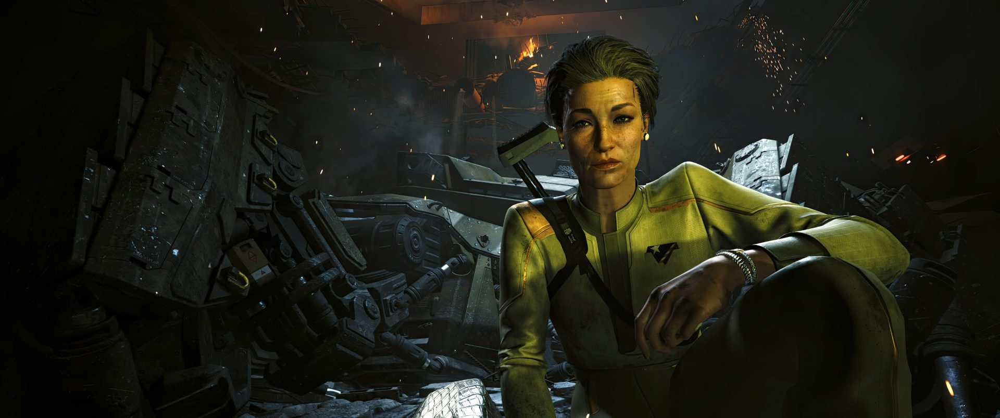
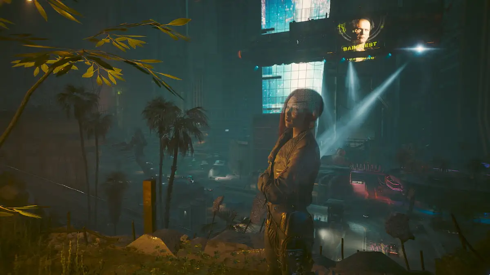

¿Que ocurre?

V, recibe una llamada urgente de Song So Mi, mejor conocida como Songbird. Ella es una netrunner extremadamente talentosa que trabaja para el gobierno de los Nuevos Estados Unidos de América (NUSA). Songbird le promete a V algo que nadie más había podido ofrecerle hasta ese momento: una posible cura para el biochip que lentamente está destruyendo su mente y fusionando su conciencia con la de Johnny Silverhand.
A cambio de esa "cura" Songbird le pide a V que le ayude con un encargo sumamente importante pero la situación se vuelve crítica cuando el avión presidencial del NUSA es derribado sobre Dogtown, una zona aislada y extremadamente peligrosa de Night City. Dogtown está controlada por Kurt Hansen, un exsoldado convertido en líder militar que gobierna el distrito con violencia, tráfico de armas y mercenarios. V se ve obligado a entrar en esa región para rescatar a la presidenta Rosalind Myers antes de que Hansen o sus hombres la encuentren.

Cuando Rosalind Myers es rescatada, V pierde total contacto con Songbird, por lo que Myers le pide que la encuentre y la salve. Durante la misión aparece Solomon Reed, un veterano agente secreto. Reed había trabajado durante años para el gobierno del NUSA, pero terminó abandonado por las mismas personas para las que arriesgó su vida. A pesar de eso, ayudara a V a buscar a su vieja amiga Songbird.
A medida que avanza la historia, Songbird empieza a relacionarse con V, y esta confiesa secretos relacionados con inteligencias artificiales prohibidas y experimentos extremadamente peligrosos conectados con la Red (espacio digital). Ella está desesperada por escapar del control del gobierno porque su estado físico y mental empeora cada vez más debido a las modificaciones y experimentos que le realizaron.

El conflicto principal gira alrededor de la confianza. Reed cree en el deber y en cumplir la misión sin importar el costo, mientras que Songbird solo quiere sobrevivir y liberarse del gobierno que la utilizó durante años. V queda atrapado entre ambos, intentando decidir quién dice la verdad y quién está manipulándolo, para asi poder ayudar y obtener su "cura".
A partir de ahí, la historia gira en torno a:
- Quién sobrevive
- Quién traiciona a quién
- Si V obtiene la oportunidad de curarse
¿Como se desenvuelve?
La historia cambia dependiendo de las elecciones que tome el jugador. V puede decidir apoyar a Reed y entregar a Songbird al gobierno, o ayudar a Songbird a escapar aunque eso implique traicionar al NUSA. Cada ruta muestra consecuencias diferentes y revela distintas partes de la verdad.